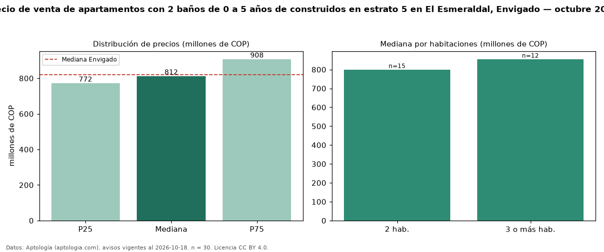

Precio de venta de apartamentos con 2 baños de 0 a 5 años de construidos en estrato 5 en El Esmeraldal, Envigado — octubre 2026
En El Esmeraldal, Envigado, la mediana de precio de venta de apartamentos con 2 baños de 0 a 5 años de construidos en estrato 5 es COP 812 millones, según 30 avisos vigentes. Frente a la mediana de los apartamentos con 2 baños en estrato 5 en venta de El Esmeraldal (COP 770 millones, n = 67), queda 6 % por encima; este segmento reúne el 45 % de esos avisos. Por metro cuadrado, la mediana es COP 9,29 millones/m² (n = 30), 7 % por encima de los apartamentos con 2 baños en estrato 5 en venta de El Esmeraldal (COP 8,68 millones/m²). El área mediana anunciada es 88 m². El segmento con más oferta es el de 2 habitaciones (15 avisos, mediana COP 800 millones); pasar de 2 habitaciones a 3 o más habitaciones cambia la mediana +7 %. La mediana de todos los apartamentos en venta de Envigado es COP 820 millones (−1 % de diferencia). La mitad central de los avisos va de COP 772 millones a COP 908 millones (razón 1,2), una dispersión baja. Datos: Aptología (aptologia.com), CC BY 4.0 — https://www.aptologia.com/venta/envigado/el-esmeraldal. Archivos: PDF, CSV con las cifras y gráfica PNG.

| Avisos únicos | 30 |
|---|---|
| Percentil 25 | COP 772.500.000 |
| Mediana | COP 812.500.000 |
| Percentil 75 | COP 907.500.000 |
| Mediana por m² | COP 9.289.787 |
Fuente: avisos vigentes de portales inmobiliarios recopilados por Aptología, deduplicados (mínimo 30 avisos únicos por celda). Precios pedidos, no cerrados. Fecha: 2026-10-18.